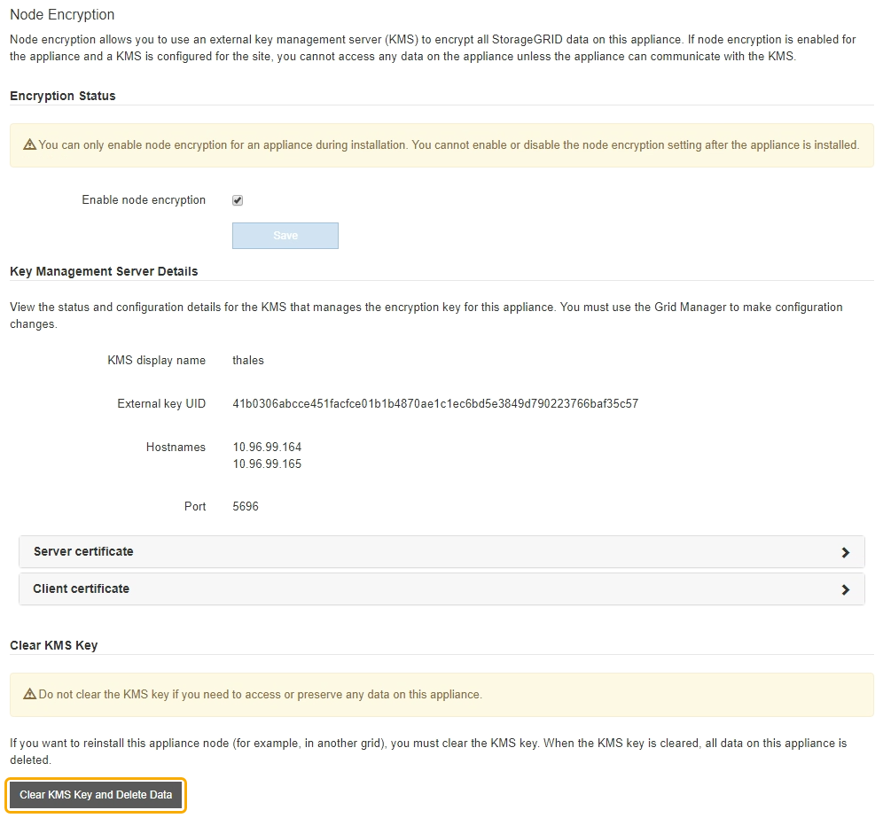
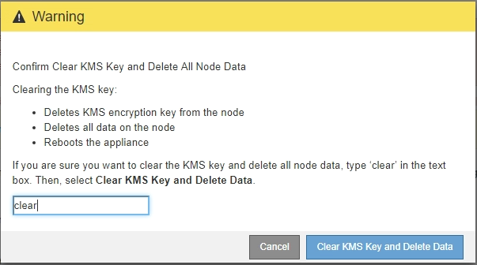

Los geht's
Los geht's
Die Konfiguration des Verschlüsselungsmanagement-Servers löschen
 Änderungen vorschlagen
Änderungen vorschlagen
-
 PDF dieser Dokumentationssite
PDF dieser Dokumentationssite
-
Installation und Wartung von Appliance-Hardware
-
SG100- und SG1000-Services-Appliances
-
SG6000 Storage-Appliances
-
-
Installation und Upgrade von Software
-
Installieren Sie Red hat Enterprise Linux oder CentOS
-
-
Durchführung der Systemadministration
-
StorageGRID verwalten
-
-
Verwenden Sie StorageGRID
-
Überwachung und Wartung von StorageGRID
-
Recovery und Wartung
-
Verfahren zur Recovery von Grid-Nodes
-
-
-
Sammlung separater PDF-Dokumente
Creating your file...
Durch Löschen der KMS-Konfiguration (Key Management Server) wird die Node-Verschlüsselung auf der Appliance deaktiviert. Nach dem Löschen der KMS-Konfiguration werden die Daten auf der Appliance dauerhaft gelöscht und sind nicht mehr zugänglich. Diese Daten können nicht wiederhergestellt werden.
Wenn Daten auf der Appliance aufbewahrt werden müssen, müssen Sie einen Node außer Betrieb nehmen oder den Node klonen, bevor Sie die KMS-Konfiguration löschen.

|
Wenn KMS gelöscht wird, werden die Daten auf der Appliance dauerhaft gelöscht und sind nicht mehr zugänglich. Diese Daten können nicht wiederhergestellt werden. |
Bauen Sie den Node aus Um beliebige Daten zu anderen Nodes im Grid zu verschieben.
Beim Löschen der Appliance-KMS-Konfiguration wird die Node-Verschlüsselung deaktiviert, wodurch die Zuordnung zwischen dem Appliance-Node und der KMS-Konfiguration für den StorageGRID-Standort entfernt wird. Die Daten auf dem Gerät werden gelöscht und das Gerät wird im Installationszustand zurückgelassen. Dieser Vorgang kann nicht rückgängig gemacht werden.
Sie müssen die KMS-Konfiguration löschen:
-
Bevor Sie die Appliance in einem anderen StorageGRID-System installieren können, wird kein KMS verwendet oder ein anderer KMS verwendet.
Löschen Sie die KMS-Konfiguration nicht, wenn Sie eine Neuinstallation eines Appliance-Node in einem StorageGRID-System planen, das denselben KMS-Schlüssel verwendet. -
Bevor Sie einen Node wiederherstellen und neu installieren können, bei dem die KMS-Konfiguration verloren ging und der KMS-Schlüssel nicht wiederhergestellt werden kann.
-
Bevor Sie ein Gerät zurückgeben, das zuvor an Ihrem Standort verwendet wurde.
-
Nach der Stilllegung einer Appliance, für die die Node-Verschlüsselung aktiviert war.
|
|
Die Appliance muss vor dem Löschen von KMS deaktiviert werden, um ihre Daten auf andere Nodes im StorageGRID System zu verschieben. Das Löschen von KMS vor der Deaktivierung der Appliance führt zu Datenverlusten und kann dazu führen, dass die Appliance funktionsunfähig bleibt. |
-
Öffnen Sie einen Browser, und geben Sie eine der IP-Adressen für den Computing-Controller der Appliance ein.
https://Controller_IP:8443Controller_IPDie IP-Adresse des Compute-Controllers (nicht des Storage-Controllers) in einem der drei StorageGRID-Netzwerke.Die Startseite des StorageGRID-Appliance-Installationsprogramms wird angezeigt.
-
Wählen Sie Hardware Konfigurieren Node-Verschlüsselung.

Wenn die KMS-Konfiguration gelöscht wird, werden die Daten auf der Appliance dauerhaft gelöscht. Diese Daten können nicht wiederhergestellt werden. -
Wählen Sie unten im Fenster KMS-Schlüssel löschen und Daten löschen.
-
Wenn Sie sicher sind, dass Sie die KMS-Konfiguration löschen möchten, geben Sie + ein
clear+ und wählen Sie KMS-Schlüssel löschen und Daten löschen.
Der KMS-Schlüssel und alle Daten werden vom Node gelöscht und die Appliance wird neu gebootet. Dies kann bis zu 20 Minuten dauern.
-
Öffnen Sie einen Browser, und geben Sie eine der IP-Adressen für den Computing-Controller der Appliance ein.
https://Controller_IP:8443Controller_IPDie IP-Adresse des Compute-Controllers (nicht des Storage-Controllers) in einem der drei StorageGRID-Netzwerke.Die Startseite des StorageGRID-Appliance-Installationsprogramms wird angezeigt.
-
Wählen Sie Hardware Konfigurieren Node-Verschlüsselung.
-
Vergewissern Sie sich, dass die Knotenverschlüsselung deaktiviert ist und dass die Schlüssel- und Zertifikatinformationen in Key Management Server Details und die Kontrolle KMS-Schlüssel löschen und Daten löschen aus dem Fenster entfernt werden.
Die Node-Verschlüsselung kann auf der Appliance erst wieder aktiviert werden, wenn sie in einem Grid neu installiert wird.
Nachdem die Appliance neu gebootet wurde und Sie überprüft haben, dass der KMS gelöscht wurde und sich die Appliance im Installationszustand befindet, können Sie die Appliance physisch aus dem StorageGRID System entfernen. Siehe Anweisungen zur Vorbereitung des Geräts für die Neuinstallation.